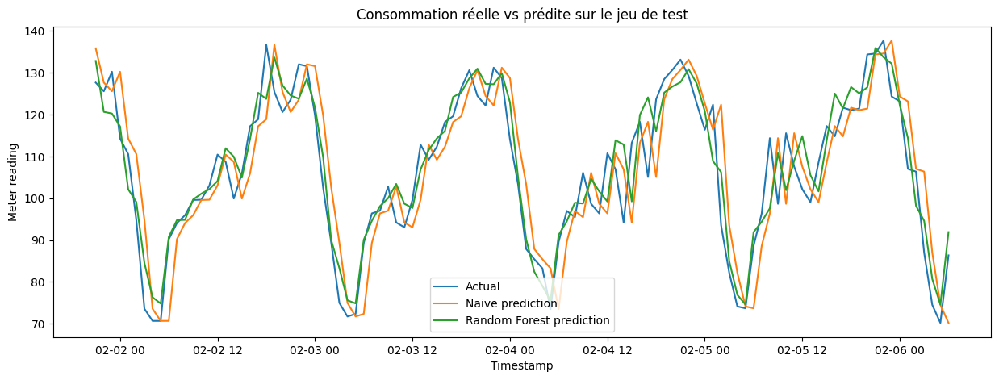
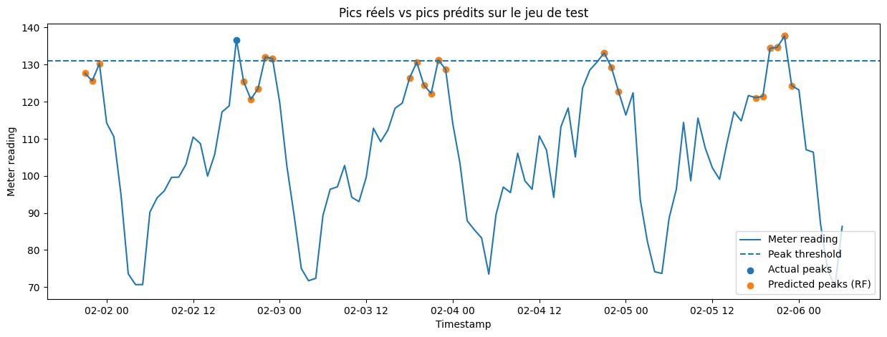
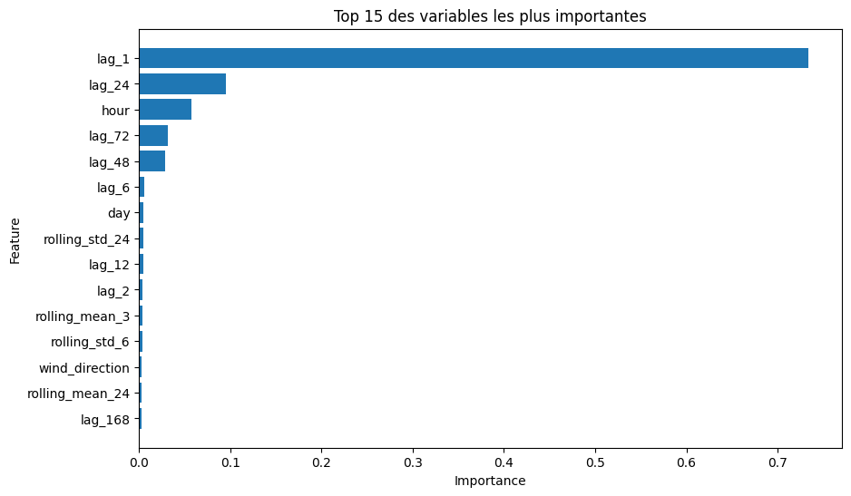

Forecasting & Détection de Pics Énergétiques (Green IT)
🎯 1. Contexte Métier & Enjeux
Les infrastructures IT critiques (Data Centers) consomment énormément d'électricité. L'enjeu opérationnel n'est pas seulement de lisser la consommation, mais surtout d'anticiper les pics de charge horaire. Un pic non anticipé entraîne une mise en danger du matériel (surchauffe) et des pénalités financières sur le marché de l'énergie.
🛠️ 2. Feature Engineering & Prévention du "Data Leakage"
Dans un problème de séries temporelles (Time Series), donner une simple date à un algorithme ne suffit pas. J'ai construit un pipeline de Feature Engineering capturant l'inertie du bâtiment :
- Variables d'inertie (Lags) : Consommation à J-1 (même heure) et H-1.
- Variables météo : Intégration de la température extérieure et de son propre lag pour modéliser l'inertie thermique.
- Tendance (Rolling Windows) : Moyennes et pics glissants sur les 6 et 24 dernières heures.
Le split Train/Validation/Test a été réalisé de manière strictement chronologique pour éviter que le modèle n'apprenne du futur (Data Leakage).
📈 3. Approche Hybride : Régression & Classification
J'ai opté pour une double modélisation via Random Forest afin de répondre à deux besoins métiers distincts :
1. Le Forecasting continu (Régression)
Objectif : Prédire la consommation exacte. Le modèle Random Forest a largement surperformé la Baseline Naïve et la Régression Linéaire, avec une Erreur Absolue Moyenne (MAE) réduite à 5.27 kWh.

Fig 1 : Le modèle Random Forest (en vert) anticipe la saisonnalité et les variations de charge avec une grande précision.
2. Le Système d'Alerte (Classification des Pics)
Objectif : Détecter les franchissements de seuil critique (défini au 85e percentile). Un classifieur Random Forest a été entraîné avec un focus sur le Recall (Rappel). Résultat : 87.5% des pics réels ont été correctement identifiés en amont sur le jeu de Test.

Fig 2 : Les prédictions du classifieur (points verts) épousent parfaitement les véritables pics de tension (points bleus).
💡 4. Insights Opérationnels (Feature Importance)

Fig 3 : L'inertie immédiate (Lag_1) et le cycle de la journée (Lag_24 et Hour) dominent l'arbre de décision.
L'explicabilité du modèle permet de tirer des actions claires pour l'équipe d'exploitation :
- Dépendance temporelle forte : Le niveau de consommation actuel (Lag_1) et le profil d'activité de la veille (Lag_24) sont les meilleurs prédicteurs. Les variables météorologiques sont secondaires face à l'activité IT pure.
- Délestage préventif : Fort d'un Recall de 87.5%, l'algorithme peut être couplé à un moniteur. Lorsqu'un pic est annoncé, l'équipe peut décaler les traitements batchs non-critiques (entraînements ML, backups) vers les heures creuses pour lisser le PUE (Power Usage Effectiveness).